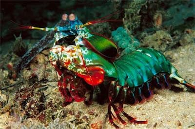

Fatos sobre o Stomatopoda
Informações Gerais
O camarão-louva-a-deus-palhaço (Odontodactylus scyllarus), também conhecido como lagosta-boxeadora é uma espécie de tamarutaca nativa do Indo-Pacífico, de Guam até a África Oriental. Em aquários de água salgada, é uma atração tanto pela coloração quanto pelo perigo.
O. scyllarus é uma das espécies de estomatópodes (tamburutaca, ou tamarutaca), chegando a 18 cm. De coloração verde, com pernas laranjas e com a carapaça com estampas tipo leopardo.
Odontodactylus scyllarus vive em tocas que constrói nos fundos dos corais, ou através de buracos deixados por outros animais, em rochas e substratos próximos de corais de recifes a cerca de 40 metros de profundidade.
São capazes de desferir um dos mais rápidos e violentos golpes do reino animal, seu soco fora registrado com uma velocidade de 80 km/h e aceleração similar a uma arma calibre .22. A pressão exercida pelo soco é de 60 kg/cm². Essa força esmagadora é a responsável pelo seu título de "lagosta-boxeadora" e é capaz de facilmente quebrar a carapaça de um caranguejo, as conchas duras e calcificadas de gastrópodes ou até mesmo quebrar o vidro reforçado de um aquário.
| Reino: | Animalia |
| Filo: | Arthropoda |
| Subfilo: | Crustacea |
| Classe: | Malacostraca |
| Subclasse: | Hoplocarida |
| Ordem: | Stomatopoda |
Fatos Interessantes
Pesadelos dos mares
Elas possuem duas patas superpoderosas na parte dianteira que, quando acionadas, são capazes de proferir um golpe com a mesma aceleração de um disparo de uma arma do calibre 22 e força de impacto de 60 kg/cm3! E isso em menos de 1/3.000 de segundo, o que significa que, se um humano pudesse acelerar os braços com 1/10 desse poder, seria possível lançar uma bola de baseball em órbita ao redor da Terra.

Golpe ninja
Essas patinhas se movem tão depressa que a água próxima a elas chega a ferver — em um fenômeno chamado supercavitação —, além de provocar uma onda de choque capaz de matar a presa mesmo que a lagosta maldita erre o golpe. Assim, com esse movimento ninja, as tamarutacas assassinam outros animais, despedaçando os coitados, mesmo que contem com carapaças protetoras.

Super resistentes
Seus membros são tão poderosos que os cientistas estão estudando a estrutura de suas células para desenvolver novas armaduras para as tropas de combate.
